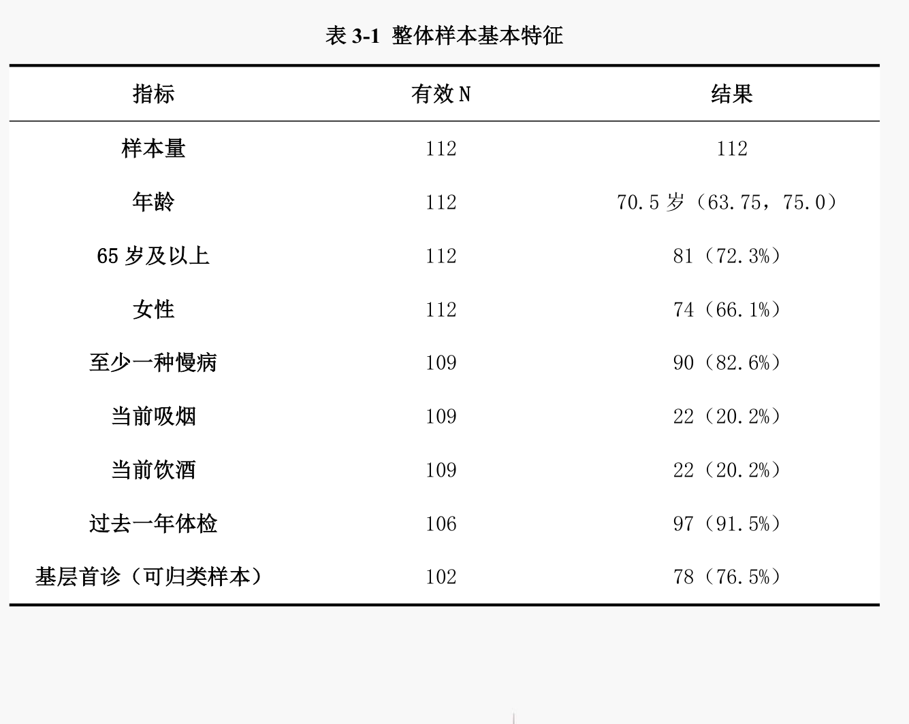
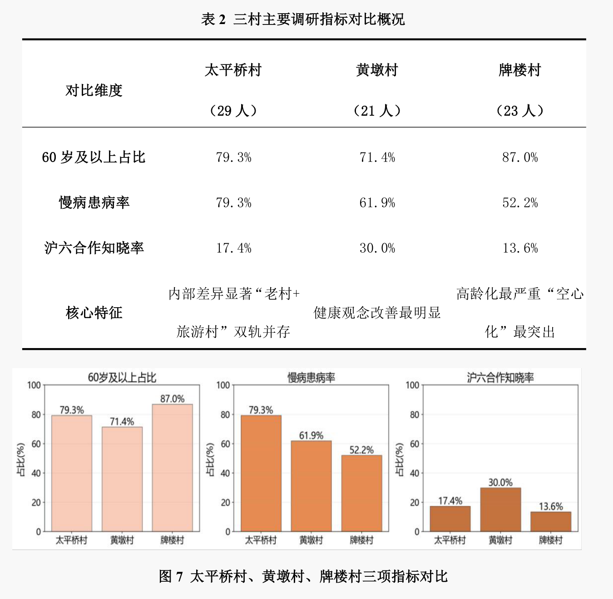
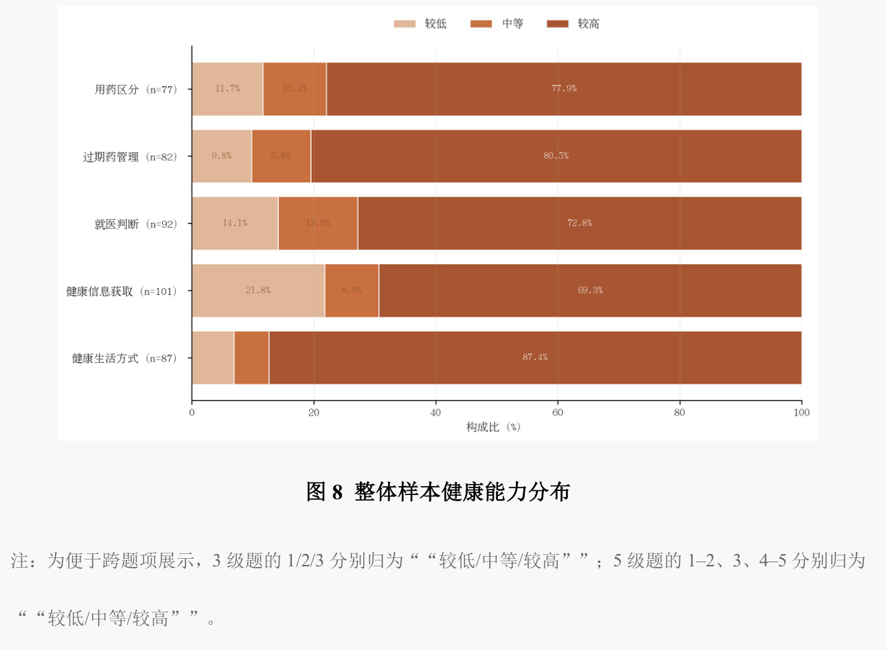
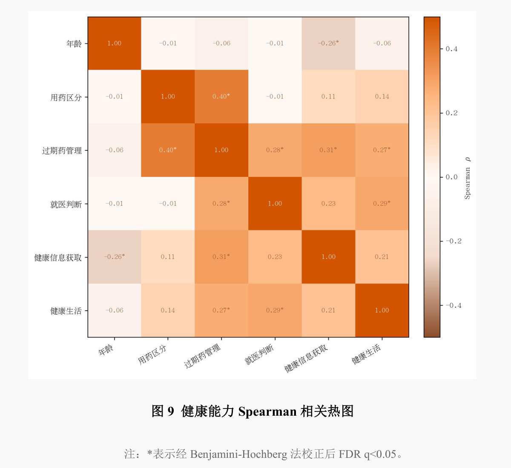

解构输出端
访谈援派专家与管理骨干，了解临床理念、适宜技术与人才培养如何传递。
 山海有回声博医计划 · 青年实践
山海有回声博医计划 · 青年实践本期社会实践 · 沪皖同行
教育科技人才一体化赋能沪六医疗对口合作
从上海医疗机构的输出经验，到六安基层的承接实践，再到奉贤的市域对照，我们追问：优质医疗资源如何转化为留下来的服务能力？
访谈援派专家与管理骨干，了解临床理念、适宜技术与人才培养如何传递。
走访行政部门、市县乡医疗机构与村庄，观察基层怎样接得住、用得好。
以沪郊基层调研对照跨省帮扶，辨认资源下沉的共性与差异。
2026 · 实践足迹
07.04 / 上海 · 仁济医院
参加门诊数智化与医学人文专题会议，了解技术、人才与服务流程怎样回应基层需求。


07.24 / 上海 · 奉贤
开展奉贤基层调研，以沪郊实践对照跨省帮扶，继续思考资源下沉、人才保障与服务可及性。

上海奉贤 39 人、六安 73 人，共 112 名受访者。各指标按有效回答数计算比例。

太平桥村 29 人、黄墩村 21 人、牌楼村 23 人，比较年龄结构、慢病患病率与家庭医生知晓率。

按各题有效回答展示健康能力分布，等级合并规则见图下注释。

采用 Spearman 相关分析；星号标记经 FDR 校正后 q＜0.05 的关联。
报告以田野调研、社会服务、咨政建言与青春化传播串联实践：从医院和村庄中提出问题，再将所见所得带回科普课堂、成果分享与持续行动。
留下回声
谢谢你与我们一同思考。